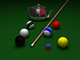
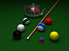
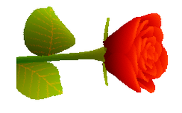
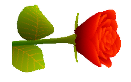
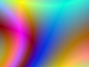
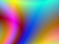
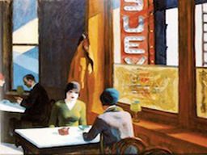
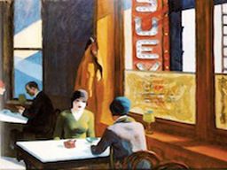
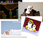
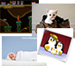

 



 



 

These photos benefit from setting 'minHueCols' > 0 to retain overwhelmed, low-frequency but distinct hues.
 

A single, optimal palette is progressivley generated for a set of images. Each is then reduced using it.